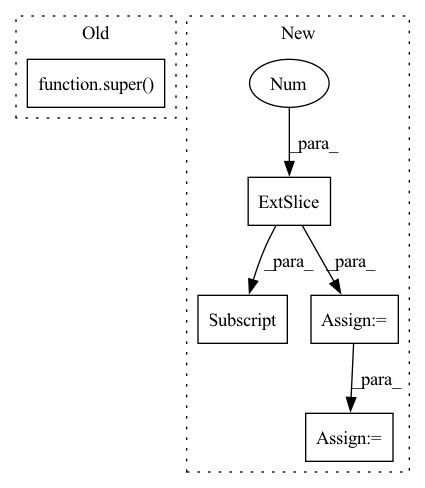

Pattern ID :4031

Before Change
def _forward(self, x):
// Transform outputs to angle and prepare prediction
angle = super()._forward(x[:,:2]).squeeze(1)
kappa = torch.abs(x[:,2]) + eps_like(x)
return torch.stack((angle, kappa), dim=1)
After Change
def _forward(self, x):
// Transform outputs to angle and prepare prediction
kappa = torch.linalg.vector_norm(x, dim=1) + eps_like(x)
angle = torch.atan2(x[:,1], x[:,0])
angle = torch.where(angle < 0, angle + 2 * np.pi, angle) // atan(y,x) -> [-pi, pi]
return torch.stack((angle, kappa), dim=1)
class AzimuthReconstruction(AzimuthReconstructionWithKappa):
In pattern: SUPERPATTERN
Frequency: 4
Non-data size: 5
Instances
Fragment ID: 15018229
Project Name: icecube/graphnet
Commit Name: c2cefa65450c1e10b541e9b0538358e02e486a06
Time: 2021-11-16
Author: andreas.sogaard@gmail.com
File Name: src/gnn_reco/models/task/reconstruction.py
M Class Name: AzimuthReconstructionWithKappa
N Class Name: AzimuthReconstructionWithKappa
M Method Name: _forward(2)
N Method Name: _forward(2)
M Parent Class: Task
N Parent Class: AzimuthReconstruction
M File Name: src/gnn_reco/models/task/reconstruction.py
N File Name: src/gnn_reco/models/task/reconstruction.py
M Start Line: 37
M End Line: 38
N Start Line: 14
N End Line: 16
'>
Before Change
def training_step(self, batch, batch_idx):
// TODO
return super().training_step(batch, batch_idx)
def validation_step(self, batch, batch_idx):
// TODO
After Change
pred = self.model(batch["image"])
loss, individual_metrics_dict, extra_dict = self.loss_function(pred, batch, epoch=self.current_epoch)
y_pred = pred["seg"][:, 0, ...]
y_true = batch["gt_polygons_image"][:, 0, ...]
evaluated_metrics = self.evaluate_metrics(
y_pred, y_true, step_type="train"
)
tensorboard_logs = {k: {"train": v} for k, v in evaluated_metrics.items()}
// use log_dict instead of log
self.log_dict(
evaluated_metrics, on_step=True, on_epoch=False, prog_bar=True, logger=False
'>
Fragment ID: 15018242
Project Name: dsgoficial/pytorch_segmentation_models_trainer
Commit Name: 21db7d98379ddf1334921d1ea545657757ba8375
Time: 2021-05-14
Author: philipeborba@gmail.com
File Name: pytorch_segmentation_models_trainer/model_loader/frame_field_model.py
M Class Name: FrameFieldSegmentationPLModel
N Class Name: FrameFieldSegmentationPLModel
M Method Name: training_step(3)
N Method Name: training_step(3)
M Parent Class: Model
N Parent Class: Model
M File Name: pytorch_segmentation_models_trainer/model_loader/frame_field_model.py
N File Name: pytorch_segmentation_models_trainer/model_loader/frame_field_model.py
M Start Line: 197
M End Line: 197
N Start Line: 196
N End Line: 208
'>
Before Change
def validation_step(self, batch, batch_idx):
// TODO
return super().validation_step(batch, batch_idx)
After Change
pred = self.model(batch["image"])
loss, individual_metrics_dict, extra_dict = self.loss_function(pred, batch, epoch=self.current_epoch)
y_pred = pred["seg"][:, 0, ...]
y_true = batch["gt_polygons_image"][:, 0, ...]
evaluated_metrics = self.evaluate_metrics(
y_pred, y_true, step_type="train"
)
tensorboard_logs = {k: {"val": v} for k, v in evaluated_metrics.items()}
// use log_dict instead of log
self.log_dict(
evaluated_metrics, on_step=True, on_epoch=True, prog_bar=True, sync_dist=True, logger=False
'>
Fragment ID: 15018222
Project Name: dsgoficial/pytorch_segmentation_models_trainer
Commit Name: 21db7d98379ddf1334921d1ea545657757ba8375
Time: 2021-05-14
Author: philipeborba@gmail.com
File Name: pytorch_segmentation_models_trainer/model_loader/frame_field_model.py
M Class Name: FrameFieldSegmentationPLModel
N Class Name: FrameFieldSegmentationPLModel
M Method Name: validation_step(3)
N Method Name: validation_step(3)
M Parent Class: Model
N Parent Class: Model
M File Name: pytorch_segmentation_models_trainer/model_loader/frame_field_model.py
N File Name: pytorch_segmentation_models_trainer/model_loader/frame_field_model.py
M Start Line: 201
M End Line: 201
N Start Line: 211
N End Line: 224